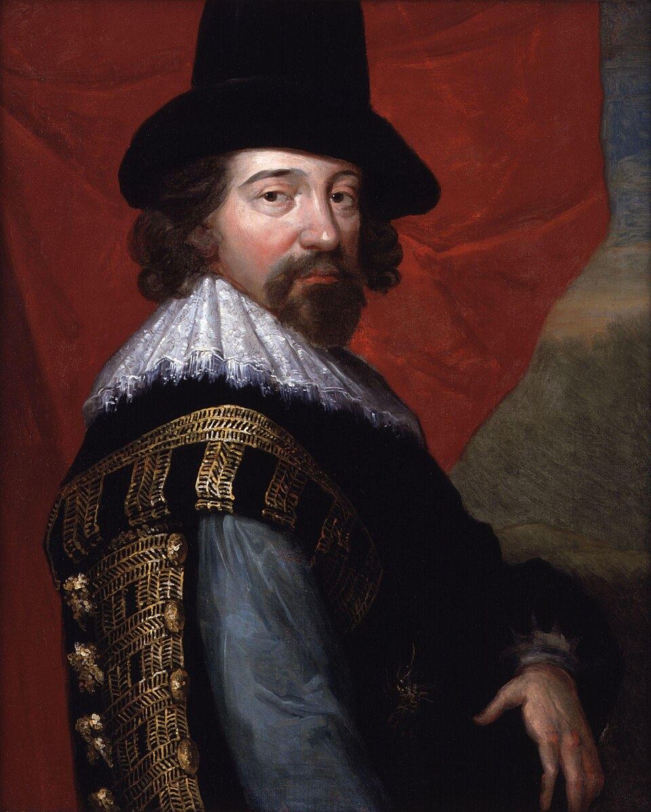
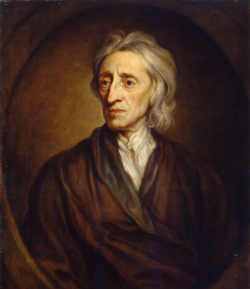
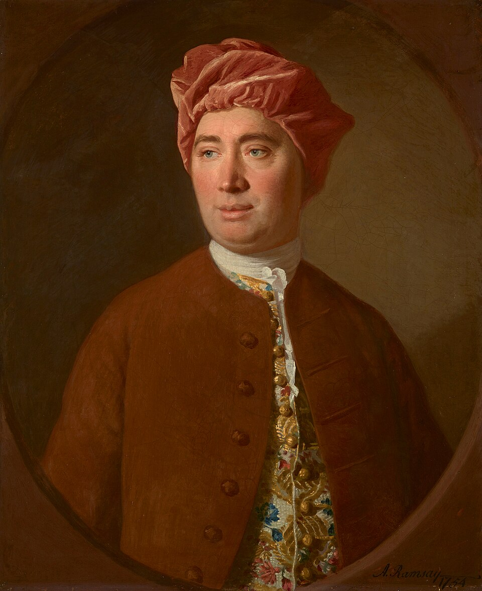
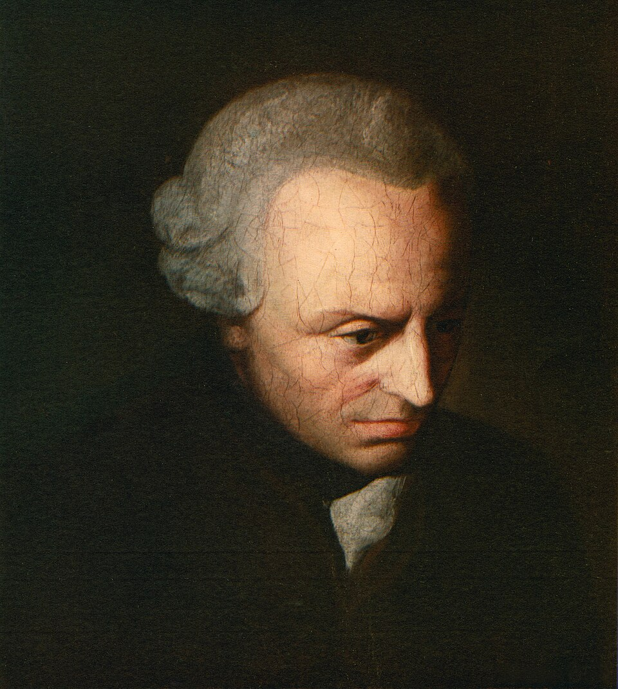

Modernidade: Epistemologia
25/08/2026
Racionalismo vs Empirismo
Empirismo: conceitos iniciais
- Empeiria = Experiência: o termo Empirismo vem da palavra grega para experimentação.
- Filósofos racionalistas, como Descartes, Spinoza e Leibniz, valorizavam a certeza que o conhecimento especulativo traz.
- Os filósofos da Modernidade que hoje chamamos de empiristas consideravam vazias as formas de conhecimento predominantemente racional e davam mais relevância ao conhecimento oriundo da experiência humana.
- Compare: “Um triângulo tem três lados” com “A água ferve a 100ºC ao nível do mar”. A primeira sentença é um desdobramento lógico da definição de triângulo, enquanto a segunda agrega um conhecimento empírico a respeito da água.
- Já uma sentença como “A soma dos ângulos internos de qualquer triângulo resulta em 180°”, apesar de não depender de observações empíricas, parece agregar um novo conhecimento (embora Hume acredite que se trata de uma sentença vazia de conteúdo, apenas com mais passos para ser formulada).
- ⚠️ Veremos adiante que é justamente esse terceiro tipo de sentença que leva Kant a propor uma nova categoria: o juízo sintético a priori.
Francis Bacon (1561-1626)
- Considerado um dos criadores do pensamento moderno, juntamente com Descartes.
- Sua concepção do método científico estava centrada na experimentação.
- Em Novum organum (1620), critica a concepção dedutiva da ciência, oriunda do Órganon aristotélico.
- Suas duas principais contribuições à epistemologia são o pensamento crítico, manifesto em sua teoria dos ídolos, e a valorização do método indutivo para a construção de uma ciência integrada à técnica, e não meramente especulativa.
- Dedução: Todo homem é mortal. Ora, Sócrates é um homem. Logo, Sócrates é mortal.
- Indução: O cisne \(C_1\) é branco. O cisne \(C_2\) é branco. (…) O cisne \(C_n\) é branco. Logo, todo cisne é branco.
- Na visão dos empiristas, o simples fato de a indução não conduzir a uma certeza lógica não invalida o conhecimento que ela produz.

Francis Bacon
John Locke (1632-1704)
- Principal fundador do empirismo britânico, ao lado de Hume.
- Em Ensaio acerca do entendimento humano (1689), ataca a teoria das ideias inatas defendida pelos racionalistas.
- Para Locke, a mente humana nasce como uma tábula rasa (tabula rasa): uma folha em branco, sem nenhum conteúdo prévio.
- Todo conhecimento vem da experiência, seja pela sensação (dados dos sentidos sobre o mundo externo) ou pela reflexão (a mente observando suas próprias operações).
- Para Locke, portanto, mesmo as ideias são originadas na experiência, pois são representações mentais de objetos conhecidos pela experiência.
- O conhecimento verdadeiro (true knowledge) sobre o mundo natural é impossível. Temos apenas crenças e opiniões a respeito dele.
- Somente o conhecimento dedutivo, como o da geometria, pode ser certo e definitivo, por não ser empírico.

John Locke
David Hume (1711-1776)
- O mais radical dos empiristas: leva os princípios de Locke às últimas consequências.
- Em Tratado da natureza humana (1739) e Investigação sobre o entendimento humano (1748), divide as percepções da mente em impressões (experiências vivas e imediatas) e ideias (cópias mais fracas das impressões, usadas para pensar).
- Sua crítica mais célebre é à noção de causalidade: nunca observamos uma “força” que ligue causa e efeito, apenas a repetição constante de eventos em sucessão. A crença em causa e efeito é um hábito da mente, não uma certeza racional.
- Isso mina a possibilidade de conhecimento necessário e universal sobre o mundo, levando Hume a um ceticismo quanto ao alcance da razão.
- Immanuel Kant afirmou que a leitura de Hume o despertou de seu sono dogmático, impulsionando sua própria filosofia crítica.

David Hume
A filosofia crítica de Kant
Immanuel Kant (1724-1804)
- Kant realiza uma revolução copernicana na epistemologia: em vez de focar nos objetos que podem ser conhecidos, investiga o próprio processo mental do sujeito enquanto elabora conhecimentos sobre objetos concretos ou abstratos.
- Busca conciliar racionalismo e empirismo: contra os racionalistas, afirma que todo conhecimento começa com a experiência; contra os empiristas, sustenta que nem todo conhecimento deriva apenas da experiência.
- A mente humana não é uma tábula rasa passiva. Ela possui estruturas a priori (anteriores à experiência) que organizam os dados sensíveis: as formas puras da sensibilidade (espaço e tempo) e as categorias do entendimento (como causalidade e substância, entre outras).

Immanuel Kant
Immanuel Kant (1724-1804)
- Fenômeno vs. noumeno
- Como o conhecimento é sempre filtrado por essas estruturas da mente, Kant distingue o fenômeno (a coisa tal como aparece a nós, já organizada pelo espaço, tempo e categorias) do noumeno ou coisa em si (Ding an sich).
- Só temos acesso ao fenômeno; o noumeno permanece incognoscível, um limite intransponível para a razão.
- Juízos sintéticos a priori
- Distingue juízos analíticos (o predicado já está contido no sujeito, ex.: “um triângulo tem três lados”) de juízos sintéticos (o predicado acrescenta algo novo, ex.: “a água ferve a 100ºC”).
- Contra Hume, mostra que a terceira sentença do início da aula (“a soma dos ângulos internos de um triângulo é 180°”) não é analítica: o conceito de triângulo não contém logicamente essa soma, é preciso construir a figura no espaço para obtê-la. É, portanto, sintética; e, como vale universal e necessariamente, sem depender de observação, é também a priori.
- Sua grande pergunta é: como são possíveis juízos sintéticos a priori, universais e necessários como os racionalistas queriam, mas que ampliam nosso conhecimento como os empiristas exigiam?
- Essa investigação é desenvolvida na Crítica da razão pura (1781), obra fundadora do idealismo transcendental.
Questões do Enem
Acompanhe pelo celular

bit.ly/filosofia-vc
Questão 1
Bertrand Russell conta a história de um peru que descobrira, em sua primeira manhã na fazenda de perus, que fora alimentado às 9 da manhã. Contudo, ele não tirou conclusões apressadas. Esperou até recolher um grande número de observações do fato de que era alimentado às 9 da manhã e fez essas observações sob uma ampla variedade de circunstâncias, às quartas e quintas-feiras, em dias quentes e dias frios, em dias chuvosos e dias secos. A cada dia acrescentava uma outra proposição de observação à sua lista. Finalmente, sua consciência ficou satisfeita e ele concluiu. “Eu sou alimentado sempre às 9 da manhã”.
CHALMERS, A. O que é ciência, afinal? São Paulo: Brasiliense, 1993 (adaptado).
Qual tipo de raciocínio corresponde ao padrão de pensamento exibido pelo personagem do texto?
A Prático, porque recolhe evidências e recomenda ações.
B Absoluto, porque busca confirmações e bloqueia refutações.
C Indutivo, porque observa eventos particulares e infere leis universais.
D Demonstrativo, porque encadeia premissas e extrai conclusões indubitáveis.
E Analógico, porque compara diferentes situações e detecta elementos semelhantes.
Questão 2
A credulidade dos ouvintes aumenta o descaramento do narrador, e o descaramento deste conquista-lhes a credulidade. A eloquência, quando levada a seu patamar mais alto, deixa pouco lugar à razão ou à reflexão, mas, dirigindo-se inteiramente à imaginação e aos afetos, cativa os ouvintes condescendentes e subjuga-lhes o entendimento.
HUME, D. Uma investigação sobre o entendimento humano e sobre os princípios da moral. São Paulo: Edunesp, 2003.
No contexto do século XVIII, o autor propõe uma reflexão radical acerca da arte da eloquência, restringindo-a ao
A sistema de crenças, conforme a proposta kantiana de objetividade do conhecimento.
B campo dos absolutos, semelhante ao entendimento medieval dos Universais.
C domínio da lógica, consoante a compreensão aristotélica nos Analíticos.
D paradigma da racionalidade, alinhado ao modelo cartesiano de método.
E âmbito da persuasão, análogo às críticas platônicas aos sofistas.
Questão 3
Suponha-se que seja trazida de súbito a este mundo uma pessoa dotada das mais poderosas faculdades da razão e reflexão. É verdade que ela observaria imediatamente um acontecimento seguindo-se a outro, mas não conseguiria descobrir nada além disso. Ela não seria, no início, capaz de apreender, por meio de nenhum raciocínio, a ideia de causa e efeito.
HUME, D. Investigação sobre o entendimento humano e sobre os princípios da moral. São Paulo: Unesp, 2003.
Segundo Hume, nossa capacidade de estabelecer relações como aquelas mencionadas no texto resulta do(a)
A representação construída pela assimilação dos juízos universais.
B hábito desenvolvido pela repetição de uma operação.
C testemunho proveniente de relato de terceiros.
D intuição formada pela atividade mental pura.
E reminiscência advinda de vidas passadas.
Questão 4
Até hoje admitia-se que nosso conhecimento se devia regular pelos objetos; porém, todas as tentativas para descobrir, mediante conceitos, algo que ampliasse nosso conhecimento, malogravam-se com esse pressuposto. Tentemos, pois, uma vez, experimentar se não se resolverão melhor as tarefas da metafísica, admitindo que os objetos se deveriam regular pelo nosso conhecimento.
KANT, I. Crítica da razão pura. Lisboa: Calouste-Gulbenkian, 1994 (adaptado).
O trecho em questão é uma referência ao que ficou conhecido como revolução copernicana na filosofia. Nele, confrontam-se duas posições filosóficas que
A assumem pontos de vista opostos acerca da natureza do conhecimento.
B defendem que o conhecimento é impossível, restando-nos somente o ceticismo.
C revelam a relação de interdependência entre os dados da experiência e a reflexão filosófica.
D apostam, no que diz respeito às tarefas da filosofia, na primazia das ideias em relação aos objetos.
E refutam-se mutuamente quanto à natureza do nosso conhecimento e são ambas recusadas por Kant.